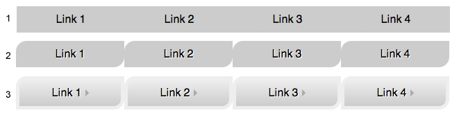

CSS
Use Chrome or Firefox for this quiz.
-
Create stylesheet to make navigation bar on this page to match the mock. Bar should take a full with
and not wrap when window resized.
You have 3 options of styling from easy to advanced, implement the one you can. All 3 can be done in a different way, ideally purelly with CSS.
Use fallback styles for incapable browsers, IE7 for the worst case. See page code for available helpers.
- Whenever implementing UI, all current browsers need to be considered. I always consider functionality first and aesthetics seconds. Although not necessary for this exercise, the use of media queries is often helpful to make the older browsers or smaller devices usable.
